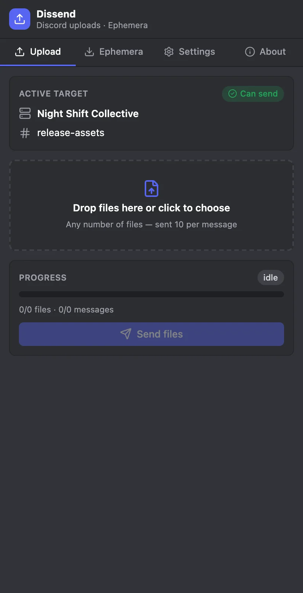
It knows where you are
Server and channel names appear before anything is sent. If you switch channels mid-run, Dissend stops.
Discord caps a message at ten attachments. Dissend splits your files into messages of ten and posts them for you.
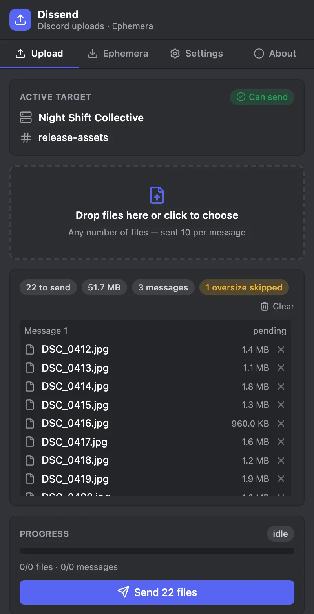
It reads the server and channel you have open, groups your files into messages, and posts them one after another.

Server and channel names appear before anything is sent. If you switch channels mid-run, Dissend stops.
Add as many as you like. Each group of ten is shown as its own message, and oversize files are skipped before they fail.
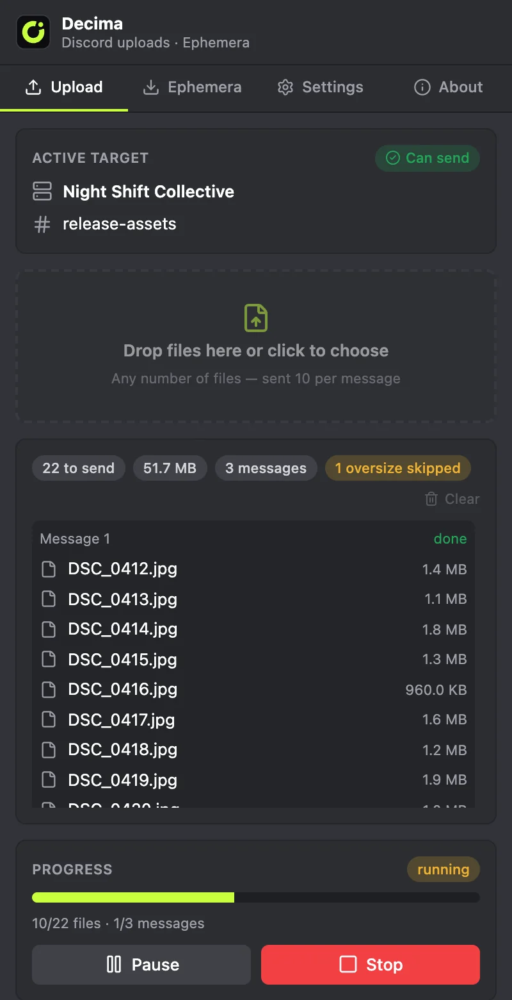
Progress, a live log and a delay between messages keep the run calm. Stop any time.
Dissend pastes your files into Discord's own message box and presses Enter. It never reads or stores your token, and it never calls private Discord endpoints.
Stories vanish after a day. Ephemera adds a round download button right on the page, on Instagram and Facebook, and saves WhatsApp Web statuses on demand.
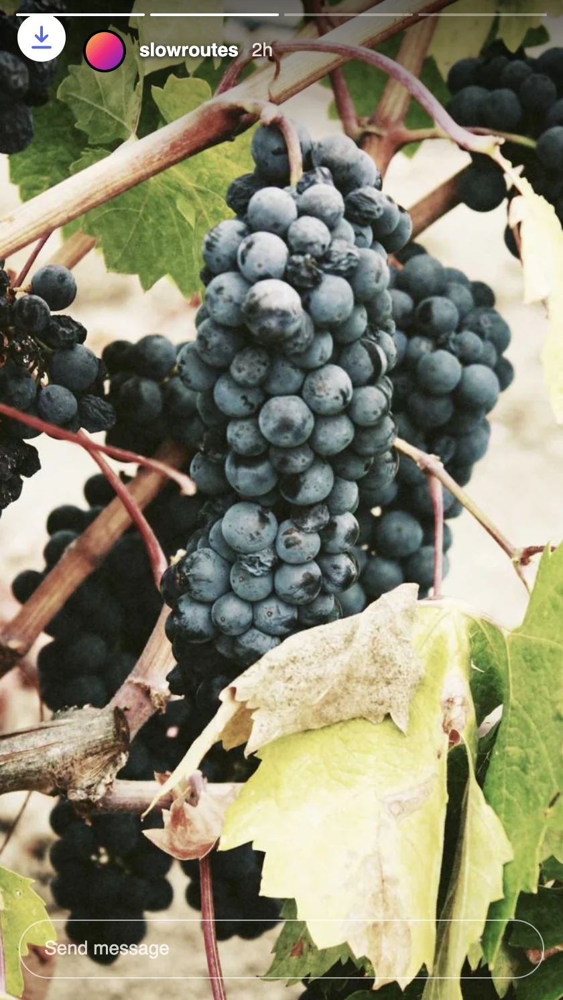
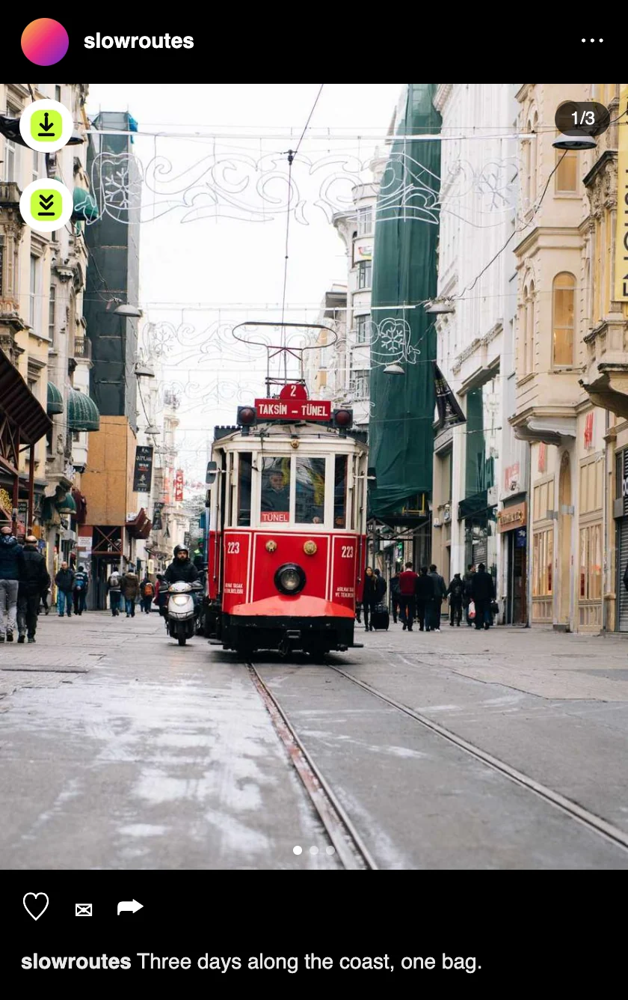
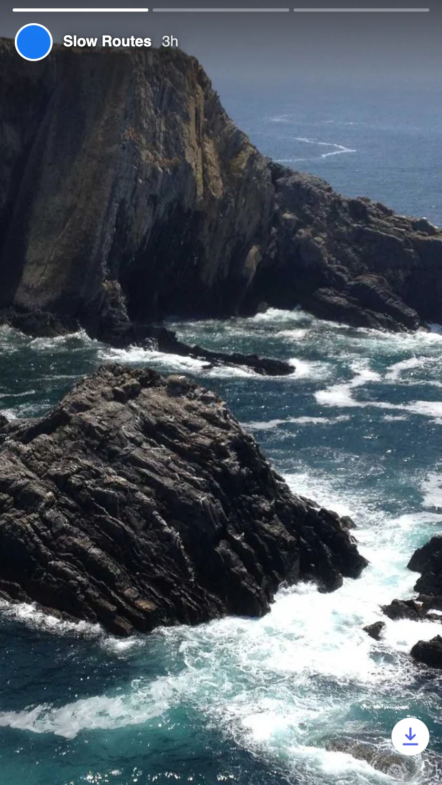
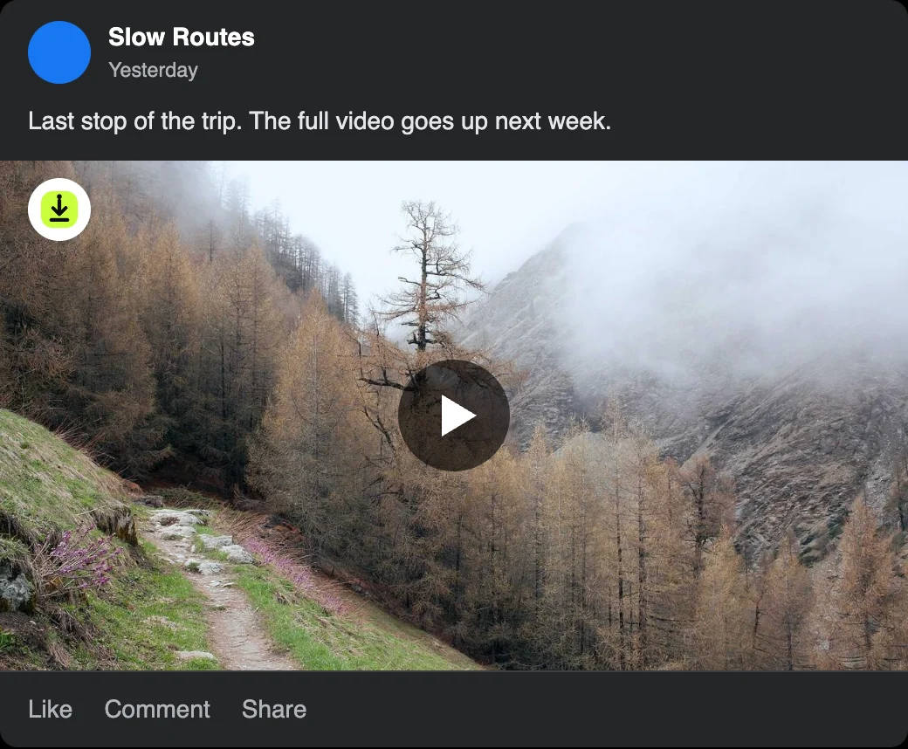
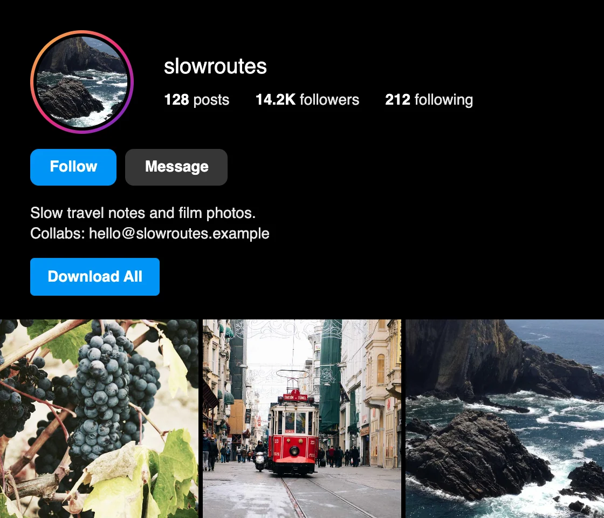
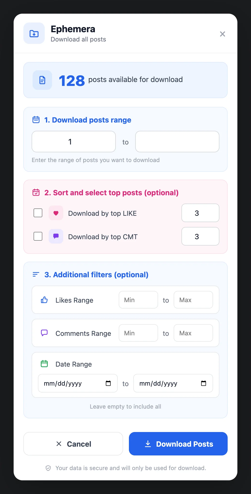
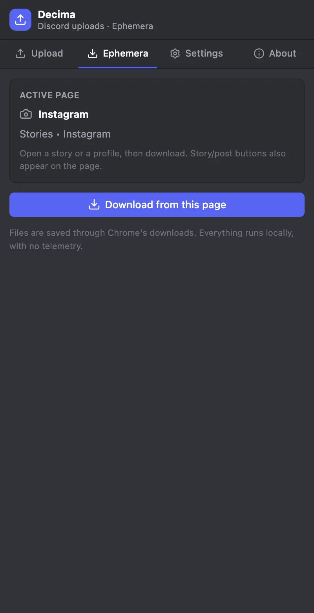
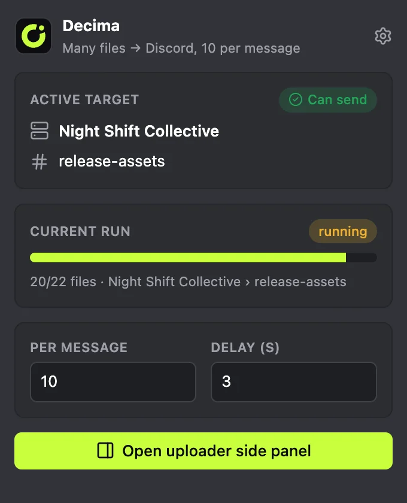
Open it to check the target, change files per message or the delay, or save the story on the page you are looking at.
Download the latest zip from the releases page and unzip it.
Open chrome://extensions and switch on Developer mode.
Choose Load unpacked and select the unzipped folder.
Reload any Discord, Instagram or Facebook tab that was already open.
Needs Chrome or another Chromium browser, version 116 or newer.